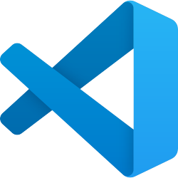
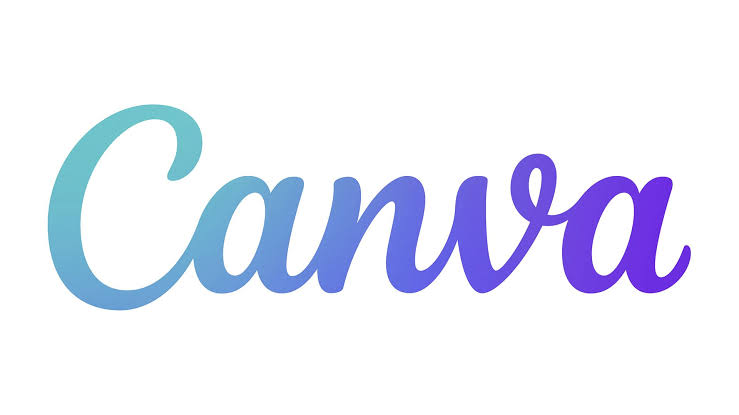

Visual Studio Code
Visual Studio Code (VS Code) foi criado pela Microsoft e lançado em 2015. É um editor de código-fonte gratuito, conhecido por ser leve, versátil e compatível com diversas linguagens de programação. Possui recursos como destaque de sintaxe, depuração de código, terminal integrado e suporte a extensões. É muito utilizado no desenvolvimento de sites, sistemas, aplicações e projetos de programação em geral.
GitHub
GitHub foi criado por Tom Preston-Werner, Chris Wanstrath, PJ Hyett e Scott Chacon, sendo lançado em 2008. É uma plataforma de hospedagem e gerenciamento de código-fonte baseada em Git, conhecida por facilitar o armazenamento, a organização e o compartilhamento de projetos. Possui recursos como controle de versões, colaboração em equipe e acompanhamento de alterações. É muito utilizado por desenvolvedores para armazenar códigos, trabalhar em projetos colaborativos e compartilhar seus trabalhos de programação.
Portugol Studio
Portugol Studio foi desenvolvido pela Universidade do Vale do Itajaí (UNIVALI) com foco principalmente no ensino de programação. É uma ferramenta educacional que utiliza o Portugol, uma linguagem baseada no português, facilitando o aprendizado de conceitos como variáveis, condicionais, repetições e algoritmos. É muito utilizado por estudantes que estão começando na programação, pois permite praticar lógica de forma mais simples antes de aprender linguagens como C, Java, Python ou PHP.

Canva
Canva foi criado por Melanie Perkins, Cliff Obrecht e Cameron Adams e lançado em 2013. É uma plataforma de design gráfico conhecida por ser simples, intuitiva e fácil de usar, mesmo por pessoas sem experiência com edição. Possui diversos modelos, imagens, fontes e elementos prontos para personalização. É muito utilizado na criação de apresentações, cartazes, logotipos, posts para redes sociais, capas, vídeos e outros materiais visuais.